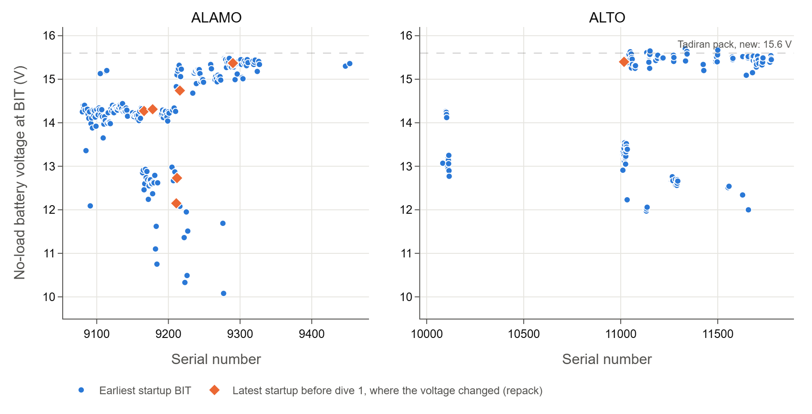
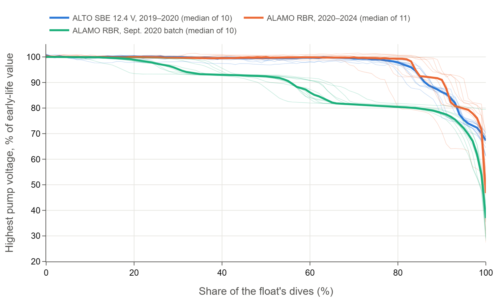
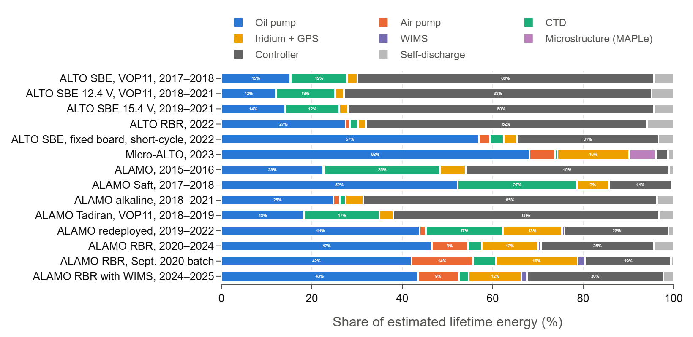
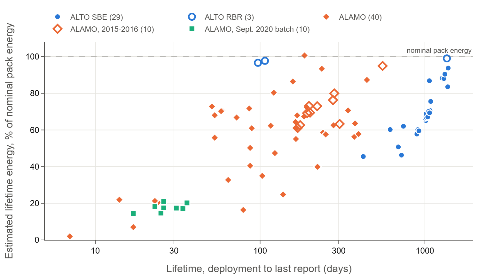
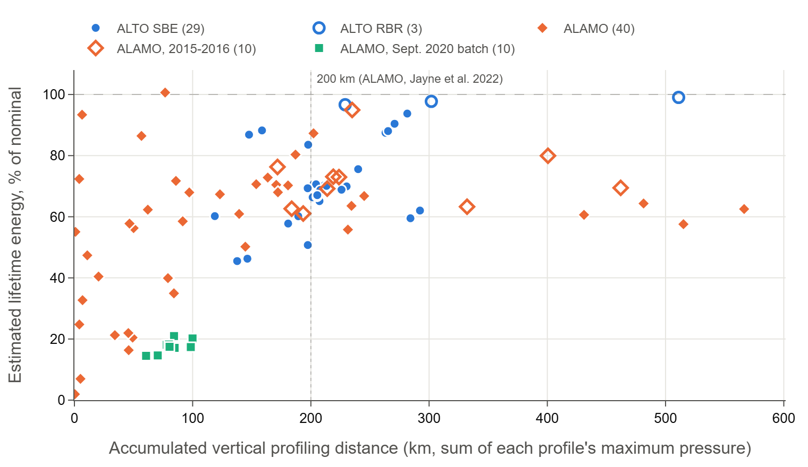

ALAMO/ALTO Float Energy Model
How the float pages' energy plots and the battery and energy page estimate the energy each float has used, and how many cycles it has left. The model adds up, dive by dive, the energy of every part of the float's cycle from its engineering data and the parts' datasheets. It was checked against the 92 floats that ran out of battery, which also gave the controller drain and the usable share of a pack. The full analysis is in the report Energy use of ALAMO/ALTO floats that ran out of battery (PDF).
Contents: Energy of a cycle · Battery packs · Controller drain · Cycles and time left · How well the cycles left can be predicted · Floats that ran out of battery · Profiling distance · Anomalies · Accuracy · Lifetime of a new ALTO · Sources
Summary
- 92 of 252 floats that stopped reporting died of battery depletion, judged by a collapse of the pump battery voltage at the end of their record, usually over the last 14–24% of their dives.
- The model accounts for 55–100% of the nominal pack energy in every group but two. The RBR ALTO 11150 used 99% of its 6.7 MJ, the Micro-ALTOs 97% and the 15.4 V SBE ALTOs 89%; the ALAMOs 55–73% of their 1.1–2.5 MJ; the ALTOs on VOP11 boards 63–67% (about 80% with the board's diode loss). No float is clearly above nominal (highest: 9301, 101%).
- On long missions the controller drain is the largest use: 66–68% of an SBE ALTO's lifetime energy. A Bluetooth power fault on boards built before mid-2022 adds about 15 mW to the 20 mW baseline.
- A new ALTO with the fixed board should last about 5 years (185 cycles) with an SBE CTD and 6 years (220 cycles) with an RBR CTD on a 10-day, 2000 dbar Argo mission, against 3.6 years with the faulty board.
- A long-lived float profiled about 200 km (sum of profile depths): 2000 dbar ALTOs in about 120 deep profiles, ALAMOs in about 500 shallow ones.
- Anomaly: ten ALAMOs deployed 2020-09-17/18 died after 0.45 MJ, 18% of their packs, which points at those packs, not the model.
- The cycles a float has left can be estimated only roughly (below): the estimate is unbiased for normal floats and about three quarters end inside its range, but only about half within ±30%. A falling pump voltage warned of the end a median 60 dives ahead.
Energy of a cycle
For each dive the model estimates the energy of each component below, in joules, and writes them to the
float's _energy.json file. Their sum is the dive's energy; the float pages plot it per cycle
(Energy per Cycle), summed over the float's life (Estimated Total Energy) and as the cycles left
(Remaining Cycles). One battery pack powers every subsystem, so every term draws on the same pack.
| Component | Estimate | Source |
|---|---|---|
| Oil pump, descent and ascent | Measured pump voltage × battery current × run time of each pump operation; the dive's first operation is the descent, the others the ascent. Records with an unusable current are left out. | Engineering data |
| Internal resistance | The battery's loss while the oil pump runs: Σ (V0 − V) × I × t, with V0 the dive's highest pump voltage. | Engineering data |
| Air pump | Air-pump current × run time × V0. | Engineering data |
| CTD profile | Per raw profile sample (else one a second of the ascent): SBE 41CP 0.264 J a 1 Hz scan (22 mA at 12 V); RBR argo3 24 mJ a sample. | Sea-Bird reference, RBR datasheet |
| CTD drift and surface | Per spot sample: SBE 0.66 J (the 2.5 s fast-pump start); RBR 24 mJ. | Sea-Bird reference, RBR datasheet |
| Iridium | 0.95 W (190 mA at 5 V) over each SBD session: messages less than 30 minutes apart form a session, from the first to the last message plus 10 s. | Iridium 9602 developers guide |
| GPS | 0.096 W (32 mA at 3 V) over each fix's time to fix. | u-blox NEO-M8 datasheet |
| WIMS | 0.0456 W for 590 s per dive with wave data. | WIMS user manual |
| Microstructure (MAPLe) | 0.3 W over each ascent, Micro-ALTOs 11491–11496 only (see Anomalies). | Bounded by the depleted Micro-ALTOs |
| Controller | 20 mW over the cycle, plus 15 mW for a board with the Bluetooth fault (see Controller drain). | Depleted floats |
| Self-discharge | The pack's yearly rate (1% lithium, 3% alkaline) of its nominal energy, over the time since the previous dive. | Cell datasheets |
| Self-discharge (storage) | The same, plus the faulty board's Bluetooth drain, over the time between the float's first message (the factory test) and its first dive. Counted in the totals, not in the per-cycle energy. |
The CTD is taken as RBR when the mission configuration (else the startup self-test) says so, and as an SBE 41CP otherwise. Regulator losses for the modem and GPS are not counted.
Battery packs
The startup built-in test (BIT) reports the no-load battery voltage, which identifies the pack better than the metadata (Figure 1). The model takes the pack from the latest startup's voltage and the float type from the serial number (ALAMO below 10000, ALTO from 10000):
| Pack | Startup voltage | Floats | Cells | Nominal energy | Self-discharge |
|---|---|---|---|---|---|
| Tadiran, ALTO | 15.0–15.6 V (from 14.6 V) | ALTO from 11040 | four TLP-83121/D packs, 32 TL-6930 D cells | 6.7 MJ | 1%/yr |
| Tadiran, ALAMO | 15.0–15.6 V | ALAMO from 9213 | three TLP-82121/D packs, 24 TL-6920 C cells | 2.5 MJ | 1%/yr |
| Saft LS 26500 | about 14.2 V (from 13.8 V) | ALAMO 9080–9210 | 24 cells | 2.4 MJ | 1%/yr |
| Alkaline Procell, ALTO | 10–13 V | 32 D cells (PC1300) | 2.6 MJ | 3%/yr | |
| Alkaline Procell, ALAMO | 10–13 V | 24 C cells (PC1400) | 1.1 MJ | 3%/yr |
Tadiran on a VOP11 board reads 12.4 V under load and 13.0–13.5 V at startup (ALTO 11020–11034, the 2017–2018 SBE ALTOs, ALAMO 9179, 9181, 9207). The VOP11 controller's power input passes through a diode and the float measures the battery after it; the drop costs about 20% of the energy as heat. Floats whose voltage gives the wrong pack, or that would have used more than their pack holds, are overridden in the model. A few floats show a repack between startups (9166, 9178, 9216, 11017; 11072–11076 and 11343); a refitted float's battery age counts from its new pack's first startup.
The battery and energy page lists the floats with Tadiran packs; its Used column is the energy used so far, storage included, as a share of the nominal energy above.

Controller drain
The Bluetooth fault. At the end of 2021 the manufacturer found that the VOP11 and early VOP12 boards left the Bluetooth module powered, whatever its setting. Affected floats draw about 2 mA in sleep with periodic 15 mA spikes, about 30 mW at 15 V, and the fault drains the pack in storage too: 9300 and 9301 shipped together in August 2021, and 9301, deployed 14 months later, made 304 profiles against 9300's 688. Floats shipped from August 2022 have the fixed board; several were sent back for new boards and batteries in 2022–2023. The model takes a board as faulty when the float's first message is before July 2022 and its first dive before 2024, unless it was refitted.
Estimate. A depleted float has used its pack's usable energy U, so the drain is (U − per-dive terms − self-discharge) / lifetime. The Micro-ALTOs 11491 and 11495 lived about 100 days, too short for the drain to matter, and drew 6.4 MJ (95% of nominal) with the MAPLe at 0.3 W, or 5.9 MJ (88%) without it. Taking that as U for the long-lived ALTOs (over 600 days; VOP11 floats corrected for a 20% diode loss):
| Group | Floats | Lifetime | Drain, median (range) |
|---|---|---|---|
| ALTO SBE, VOP11, 2017–2018 | 8 | 616–1,085 d | 46 mW (36–67) |
| ALTO SBE 12.4 V, VOP11, 2018–2021 | 11 | 690–1,074 d | 41 mW (39–64) |
| ALTO SBE 15.4 V, 2019–2021 | 6 | 1,273–1,385 d | 39 mW (36–41) |
| ALTO RBR, 2022 | 1 | 1,360 d | 33 mW |
| 11340, fixed board | 1 | 741 d | 54 mW |
| 11342, fixed board | 1 | 1,065 d | 26 mW |
The faulty boards give 39–46 mW (35–42 mW with U = 5.9 MJ); 11342, the one long-lived ALTO with a fixed board, 26 mW (21 mW), so the fault adds 13–14 mW whatever U. 11340, also fixed, died at 62% of nominal on a shallow short-cycle mission, more like a failure. The ALAMOs live 1–15 months, so the drain is a small part of their use and cannot be pinned down from them. The model uses 20 mW plus 15 mW for the fault, set against U = 5.9 MJ, the low end of the estimate; it keeps every depleted float within its nominal pack energy. Over a year 35 mW is about 1.1 MJ, a sixth of an ALTO's packs; self-discharge (about 2 mW for an ALTO) does not explain it.
Cycles and time left
The Remaining Cycles plot on the float pages and the Outlook columns of the battery and energy page estimate how many cycles the float has left on its current mission:
- Energy of a cycle: the median energy per cycle (without storage) over the last 10 dives, so a change of mission shows after a few dives; the cycle length is their median too.
- Usable energy: 68% of the pack's nominal energy, with a range of 50–95%. The floats that ran out of battery used 50–95% of nominal, median about 67%. Backtested on 92 of them, 50/68/95% removes the bias of 65/80/95% (which predicted 1.4–1.9 times the cycles they had left) and puts about three quarters of the floats inside the range.
- Controller uncertainty: the range also moves each cycle's controller energy by ±30%: the lowest count takes 50% usable with the drain 30% higher, the highest 95% with it 30% lower.
- Cycles left = (usable energy − energy used so far, storage included) / energy of a cycle; time left = cycles left × cycle length.
- Falling pump voltage: a float is flagged when the highest oil-pump voltage of 3 dives in a row is below 95% of its median over dives 1–10. On the floats that ran out of battery it came a median 60 dives, 16% of their dives, before the end, and caught the abrupt failures the energy estimate misses. Depletion does not always show a gradual fall first: some floats dropped within one or two dives.
The battery and energy page colors an expected time left under 0.25, 0.5 and 1 year, a pack used past 95% and 68%, and a falling pump voltage.
How well the cycles left can be predicted
The estimate was recomputed after every dive of the 92 floats that ran out of battery and compared with the dives each actually made afterwards. The table gives the median of predicted / actual cycles left, and the share of floats whose actual count fell inside the estimate's range. “Normal” leaves out the September 2020 batch, the redeployed ALAMOs and the ungrouped floats (68 floats).
| Point in the float's life | Usable 65/80/95%, all 92 | Usable 50/68/95%, all 92 | Usable 50/68/95%, normal |
|---|---|---|---|
| 25% | 1.47, 47% | 1.21, 57% | 1.05, 71% |
| 50% | 1.57, 50% | 1.19, 65% | 1.02, 78% |
| 75% | 1.92, 48% | 1.23, 64% | 1.01, 79% |
| 90% | 3.31, 47% | 1.56, 68% | 0.93, 85% |
- The first calibration over-predicted. Taking 80% of nominal as usable (range 65–95%), the estimate gave 1.5–3.3 times the cycles the floats had left, more the closer they came to the end, because they died at a median of about 67%. The pages now take 68% (range 50–95%), which removes the bias for normal floats and puts about three quarters of them inside the range.
- The count is uncertain even so. Only 41–56% of the normal floats' estimates fall within ±30% of the actual count through mid-life, because floats die anywhere between about 50 and 99% of nominal; late in life the estimate is mostly the gap between that share and what has been used. The range, not the central number, is the honest answer.
- Anomalies cannot be predicted from energy. The September 2020 batch, the redeployed packs and some alkaline packs died at 18–40% of nominal, and the estimate over-predicts them several times over.
- A falling pump voltage is the better warning. The flag caught 90 of the 92 depleted floats, a median 60 dives (16% of their dives) before the end, the anomalies included. Using it to shorten the count did not make the count more accurate for normal floats (it under-predicted late in life), so the pages keep the energy estimate and mark the flag on the plot. Of the 28 floats reporting in November 2026, 3 were flagged.
Floats that ran out of battery
Depletion. A float counts as depleted when it has not reported for over 60 days, made at least 10 dives, and on its last dive its highest oil-pump battery voltage (measured under load) was below 80% of its median over dives 1–10. Most depleted floats show the shape of a lithium pack: flat, then a decline over the last 14–24% of the dives (median 17%; Figure 2). Three (10111, 11015, 9174) dropped within one or two dives. 9095 and 9115 died within three weeks at 2–7% of their packs, more like failures than depletion.
Field resets. The deployment date is the float's first dive. Fourteen depleted floats were restarted in the field, which sends a new startup message mid-mission; for four of them (9113, 9223, 9226, 9245) the restart also reset the dive counter, and the model now keeps their drain before the reset.

The floats are grouped by type, pack and deployment batch (years are first-dive years). Eight depleted floats fit no group (9095, 9115, 9119, 9132, 9239, 9288, 11143, 11146).
| Group | Floats | Pack in the model | Startup voltage |
|---|---|---|---|
| ALTO SBE, VOP11, 2017–2018 | 10110–10113, 10115, 10116, 11013, 11015 | Tadiran | 12.8–13.4 V |
| ALTO SBE 12.4 V, VOP11, 2018–2021 | 11020–11024, 11026, 11027, 11029–11031, 11034 | Tadiran | 13.2–13.5 V |
| ALTO SBE 15.4 V, 2019–2021 | 11044, 11046, 11048, 11049, 11055, 11058 | Tadiran | 15.3–15.6 V |
| ALTO RBR, 2022 | 11150 | Tadiran | 15.5 V |
| ALTO SBE, fixed board, short-cycle, 2022 | 11340, 11342 | Tadiran | 15.6 V |
| Micro-ALTO, 2023 | 11491, 11495 | Tadiran | 15.6 V |
| ALAMO, 2015–2016 | 9010, 9033, 9039, 9045, 9046, 9054, 9062, 9064, 9069, 9078 | Saft | 13.7–14.4 V |
| ALAMO Saft, 2017–2018 | 9103, 9107, 9109, 9152 | Saft | 13.7–14.3 V |
| ALAMO alkaline, 2018–2021 | 9165, 9167, 9174, 9223, 9226, 9276 | alkaline | 10.3–12.9 V |
| ALAMO Tadiran, VOP11, 2018–2019 | 9179, 9181, 9207 | Tadiran | 12.6–12.8 V |
| ALAMO redeployed, 2019–2022 | 9097, 9101, 9105, 9112–9114 | Saft or Tadiran | 14.1–15.2 V |
| ALAMO RBR, 2020–2024 | 9245, 9280, 9282, 9283, 9290, 9300, 9301, 9322–9324, 9327 | Tadiran | 14.9–15.5 V |
| ALAMO RBR, Sept. 2020 batch | 9246, 9248, 9249, 9265–9267, 9269–9271, 9273 | Tadiran | 14.9–15.1 V |
| ALAMO RBR with WIMS, 2024–2025 | 9292, 9296, 9302, 9309 | Tadiran | 15.1–15.3 V |
| Group | Floats | Lifetime (d) | Pack (nominal) | Per-dive terms | Full estimate, mean (range) | Share of nominal |
|---|---|---|---|---|---|---|
| ALTO SBE, VOP11, 2017–2018 | 8 | 616–1,085 | Tadiran, 6.7 MJ | 1.27 MJ | 4.22 MJ (3.10–5.06) | 63 % (46–76) |
| ALTO SBE 12.4 V, VOP11, 2018–2021 | 11 | 690–1,074 | Tadiran, 6.7 MJ | 1.22 MJ | 4.50 MJ (3.40–4.73) | 67 % (51–71) |
| ALTO SBE 15.4 V, 2019–2021 | 6 | 1,273–1,385 | Tadiran, 6.7 MJ | 1.66 MJ | 5.94 MJ (5.60–6.28) | 89 % (84–94) |
| ALTO RBR, 2022 | 1 | 1,360 | Tadiran, 6.7 MJ | 2.12 MJ | 6.64 MJ | 99 % |
| ALTO SBE, fixed board, short-cycle, 2022 | 2 | 741–1,065 | Tadiran, 6.7 MJ | 3.26 MJ | 4.99 MJ (4.16–5.82) | 74 % (62–87) |
| Micro-ALTO, 2023 | 2 | 97–107 | Tadiran, 6.7 MJ | 6.26 MJ | 6.51 MJ (6.48–6.55) | 97 % (97–98) |
| ALAMO, 2015–2016 | 10 | 169–554 | Saft, 2.4 MJ | 0.94 MJ | 1.73 MJ (1.46–2.27) | 72 % (61–95) |
| ALAMO Saft, 2017–2018 | 4 | 51–123 | Saft, 2.4 MJ | 1.33 MJ | 1.55 MJ (1.13–1.74) | 65 % (47–73) |
| ALAMO alkaline, 2018–2021 | 6 | 23–237 | alkaline, 1.1 MJ | 0.19 MJ | 0.62 MJ (0.23–1.03) | 56 % (21–93) |
| ALAMO Tadiran, VOP11, 2018–2019 | 3 | 89–396 | Tadiran, 2.5 MJ | 0.56 MJ | 1.47 MJ (1.42–1.54) | 58 % (56–61) |
| ALAMO redeployed, 2019–2022 | 6 | 14–223 | Saft or Tadiran, 2.4–2.5 MJ | 0.72 MJ | 0.94 MJ (0.49–1.78) | 38 % (20–70) |
| ALAMO RBR, 2020–2024 | 11 | 72–445 | Tadiran, 2.5 MJ | 1.31 MJ | 1.85 MJ (1.45–2.54) | 73 % (58–101) |
| ALAMO RBR, Sept. 2020 batch | 10 | 17–36 | Tadiran, 2.5 MJ | 0.36 MJ | 0.45 MJ (0.37–0.53) | 18 % (15–21) |
| ALAMO RBR with WIMS, 2024–2025 | 4 | 79–377 | Tadiran, 2.5 MJ | 0.93 MJ | 1.38 MJ (0.41–1.79) | 55 % (16–71) |
- The estimate closes on the pack energy. Groups with one mission and pack agree closely (spread 4% for the 15.4 V ALTOs), and most end at 55–100% of nominal, as packs that lose capacity at pump currents and in the cold should. The agreement is partly built in, because the drain was estimated from these floats.
- Long missions spend most on the controller (Figure 3): 66–68% on the SBE ALTOs and 62% on the RBR ALTO 11150, then the oil pump (12–15%) and CTD (12–13%).
- Short cycles spend most on the oil pump: 68% on the Micro-ALTOs (plus 6% on the MAPLe), 57% on the short-cycle SBE ALTOs and 42–52% on the RBR and Saft ALAMOs, with Iridium at 7–18%.
- WIMS costs little: the 27 depleted ALAMOs that ran it spent a median 1.3% of their energy on it (at most 2.1%).
- Some groups end low: alkaline ALAMOs 56% (21–93%), Tadiran ALAMOs on VOP11 boards 58%, and redeployed ALAMOs 38%, whose packs had already aged or been used.


Profiling distance
The accumulated vertical profiling distance is each float's sum of the maximum pressure of every profile. The depleted floats profiled 15,900 km in all: 7,100 km by the ALTOs and 8,800 km by the ALAMOs. The 35 that lived more than a year profiled a median 205 km (middle half 193–235 km), as Jayne et al. (2022) give for an ALAMO, but the spread across groups is wide.
| Group | Floats | Profile depth | Profiles | Distance (range) | Per year | Pumps | Controller | Full estimate per km | Per MJ of pack |
|---|---|---|---|---|---|---|---|---|---|
| ALTO SBE, VOP11, 2017–2018 | 8 | 2,000 dbar | 114 | 198 km (119–240) | 75 km | 2.5 | 14.6 | 21 kJ | 30 km |
| ALTO SBE 12.4 V, VOP11, 2018–2021 | 11 | 2,000 dbar | 106 | 205 km (197–213) | 73 km | 2.6 | 15.1 | 22 kJ | 31 km |
| ALTO SBE 15.4 V, 2019–2021 | 6 | 2,000 dbar | 136 | 264 km (159–282) | 74 km | 3.1 | 14.9 | 22 kJ | 39 km |
| ALTO RBR, 2022 | 1 | 2,000 dbar | 260 | 511 km | 137 km | 3.7 | 8.1 | 13 kJ | 76 km |
| ALTO SBE, fixed board, short-cycle, 2022 | 2 | 180 dbar | 991 | 220 km (148–292) | 97 km | 15.8 | 8.4 | 27 kJ | 33 km |
| Micro-ALTO, 2023 | 2 | 290 dbar | 908 | 265 km (229–302) | 946 km | 18.4 | 0.7 | 25 kJ | 40 km |
| ALAMO, 2015–2016 | 10 | 480 dbar | 463 | 221 km (172–462) | 401 km | 1.8 | 2.8 | 8 kJ | 92 km |
| ALAMO Saft, 2017–2018 | 4 | 310 dbar | 524 | 168 km (11–181) | 1,155 km | 5.4 | 1.0 | 10 kJ | 70 km |
| ALAMO alkaline, 2018–2021 | 6 | 70 dbar | 82 | 7 km (1–62) | 25 km | 24.6 | 69.4 | 106 kJ | 6 km |
| ALAMO Tadiran, VOP11, 2018–2019 | 3 | 480 dbar | 99 | 50 km (47–139) | 49 km | 4.2 | 22.6 | 28 kJ | 20 km |
| ALAMO redeployed, 2019–2022 | 6 | 280 dbar | 188 | 64 km (4–171) | 678 km | 6.0 | 1.0 | 11 kJ | 26 km |
| ALAMO RBR, 2020–2024 | 11 | 310 dbar | 529 | 202 km (57–566) | 564 km | 4.4 | 1.1 | 11 kJ | 80 km |
| ALAMO RBR, Sept. 2020 batch | 10 | 250 dbar | 322 | 82 km (61–100) | 1,145 km | 2.9 | 1.0 | 5 kJ | 33 km |
| ALAMO RBR with WIMS, 2024–2025 | 4 | 270 dbar | 452 | 125 km (46–234) | 212 km | 4.8 | 3.0 | 10 kJ | 50 km |
- Profiles trade against depth. The 2000 dbar SBE ALTOs made 106–136 profiles of 2 km each; the ALAMOs 450–530 profiles of 0.3–0.5 km. Both reached about 200 km, about 75 km a year for the SBE ALTOs on 10-day cycles and 400–1,150 km a year for the ALAMOs and Micro-ALTOs cycling every few hours to days.
- Deep profiles are cheaper per km for the pumps. Each cycle costs a roughly fixed amount of pumping to rise from the park depth and fill the air bladder, whatever the profile depth: 2.5–3.7 kJ a km for the 2000 dbar ALTOs, 16–18 kJ for ALTOs profiling to 180–290 dbar, 1.8–5.4 kJ for the ALAMOs.
- On long missions the controller sets the reach. An SBE ALTO spends about 15 kJ a km on the controller, about 70% of its 21–22 kJ a km. The RBR ALTO 11150 profiled 511 km to 2000 dbar, twice an SBE ALTO, because its CTD has no pump and it made 260 profiles in 3.7 years.
- ALAMOs get about twice as far per MJ (70–92 km against 30–40 km for the SBE ALTOs): an ALTO is about twice the size, so the same buoyancy change pumps about twice the oil, and ALAMOs profile shallower and cycle faster, leaving less time for the drain.
- Distance alone predicts energy poorly (28% of the variance across ALAMOs, 57% across ALTOs): park depth, drift sampling and the number of surfacings matter as much.

Anomalies
The September 2020 ALAMO batch. Ten RBR floats deployed on 2020-09-17/18 (firmware 0x08000101) died after 0.37–0.53 MJ. Their voltage was already down to about 13.8 V halfway through and fell over 69% of the dives instead of the usual 17%. 9245, deployed a month earlier with the same firmware, used 1.69 MJ, and the WIMS the batch ran costs only about 2%. The cause is in the packs (a smaller pack, a weak cell lot or passivation).
Micro-ALTOs. 11491–11496 are RBR ALTOs with a Rockland Scientific MAPLe turbulence system (shear and FP07 probes), powered from the float's pack while it logs during the ascent; four were deployed on 2023-11-09 on cycles of about 2.5 hours. No document gives the MAPLe's power. 11491 and 11495 ran out after a modeled 6.1 MJ without it, so with packs of 6.7–7.2 MJ it drew at most 0.5–0.8 W while logging; the model takes 0.3 W, 0.35–0.43 MJ per float.
| Float | Dives | Reporting | Profiled | Per dive | Total |
|---|---|---|---|---|---|
| 11491 | 850 | 2023-11-09 to 2024-02-14 | 229 km | 7.6 kJ (pump 5.2, MAPLe 0.4) | 6.48 MJ (97%) |
| 11495 | 966 | 2023-11-09 to 2024-02-24 | 302 km | 6.8 kJ (pump 4.6, MAPLe 0.4) | 6.55 MJ (98%) |
| 11492 | 332 | 2023-11-09 to 2023-12-14 | 101 km | 6.5 kJ | 2.15 MJ |
| 11494 | 136 | 2023-11-09 to 2023-11-24 | 41 km | 6.9 kJ | 0.94 MJ |
Accuracy
| Term | Share | Basis | Check | Likely error |
|---|---|---|---|---|
| Oil pump | 12–68% | Measured voltage × current × time | Groups with one mission agree to a few % | A few % |
| Internal resistance, other loads | – | Oil pump only (0–3%) | – | Under 1–2% |
| Air pump | 0–14% | Current × run time × pump voltage | None | About 10% |
| CTD, SBE 41CP | 12–27% | 22 mA at 12 V; 2.5 s pump time a spot sample | Sea-Bird reference; Martini et al. (2019) | 5–10% (20% spot) |
| CTD, RBR argo3 | up to 5% | 24 mJ a sample | RBR datasheet | About 10% |
| Iridium | 2–18% | 0.95 W over the session | 9602 guide: up to 1.0 W | About 20% |
| GPS, WIMS | under 2% | Datasheet and manual powers | – | Small |
| MAPLe | 6% (Micro-ALTOs) | 0.3 W over each ascent | At most 0.5–0.8 W | About ±50% |
| Controller | 3–68% | 20 mW, 35 mW with the fault | Depleted floats; manufacturer's 2 mA | About ±30% |
| Self-discharge | 0–5% | 1% a year lithium, 3% alkaline | Datasheets | Small |
The spread within a group bounds the random error: 2.5–4% for groups with one mission and pack, 15–30% for mixed missions. The main systematic uncertainty is the controller drain: ±30% moves an SBE ALTO's total by about 20%, an ALAMO's by under 8%. Regulator losses for the modem and GPS are not counted and may add a few percent.
Lifetime of a new ALTO on an Argo mission
| ALTO SBE | ALTO RBR | |
|---|---|---|
| Oil and air pump, per cycle | 6.5 kJ | 6.5 kJ |
| CTD, per cycle | 5.7 kJ | 0.5 kJ |
| Iridium and GPS, per cycle | 0.8 kJ | 0.8 kJ |
| Controller, 20 mW over 9.9 days | 17.1 kJ | 17.1 kJ |
| Self-discharge, 1% a year of 6.7 MJ | 1.8 kJ | 1.8 kJ |
| Total per cycle | 31.9 kJ | 26.7 kJ |
| Expected lifetime (5.9 MJ usable) | 185 cycles, 5.0 years | 220 cycles, 6.0 years |
| Range | 135–220 cycles, 3.7–6.0 years | 155–275 cycles, 4.3–7.4 years |
| Profiling distance at 2 km a profile | 370 km (270–440) | 440 km (310–550) |
The per-dive loads are the medians of the five 2000 dbar SBE ALTOs 11044–11055 (13.0 kJ a dive); the RBR column replaces the SBE 41CP's 0.264 J a scan with RBR's 24 mJ a sample. The range covers the drain ±30% and a usable energy of 75–88% of nominal. With a faulty board's 35 mW an SBE ALTO makes 132 cycles (3.6 years), as the faulty 15.4 V ALTOs did (131–144). The controller is still over half of each cycle's energy, so a shorter cycle gives more profiles.
Sources
Sea-Bird SBE 41/41CP datasheet and hardware reference; Martini, Murphy, Schmitt and Larson (2019),
J. Atmos. Oceanic Technol., doi:10.1175/JTECH-D-18-0050.1;
RBR argo3 datasheet; Iridium 9602 SBD Transceiver Developers Guide rev. 5; u-blox NEO-M8 datasheet;
WIMS user manual rev. 3.22; Saft LS 26500 datasheet; Tadiran TLP-83121/D and TLP-82121 test summaries; Tadiran
HLC-1550A datasheet; Duracell Procell PC1300 and PC1400 datasheets; Jayne et al. (2022), J. Atmos. Oceanic
Technol. 39, 491–502, doi:10.1175/JTECH-D-21-0046.1;
Jayne and Bogue (2017), Oceanography 30(2); WHOI float records and manufacturer correspondence. The model is
EnergyEstimates in xmtps-aggregate-json.py and EnergyModel.py in the
XMTPS repository; this page summarizes the report
Energy use of ALAMO/ALTO floats that ran out of battery (A. Ekholm,
November 2026, PDF).